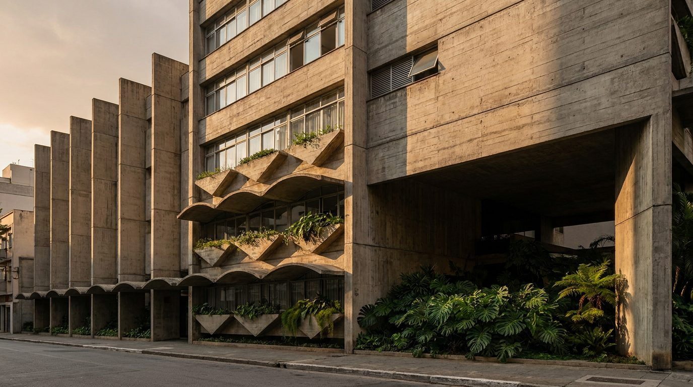
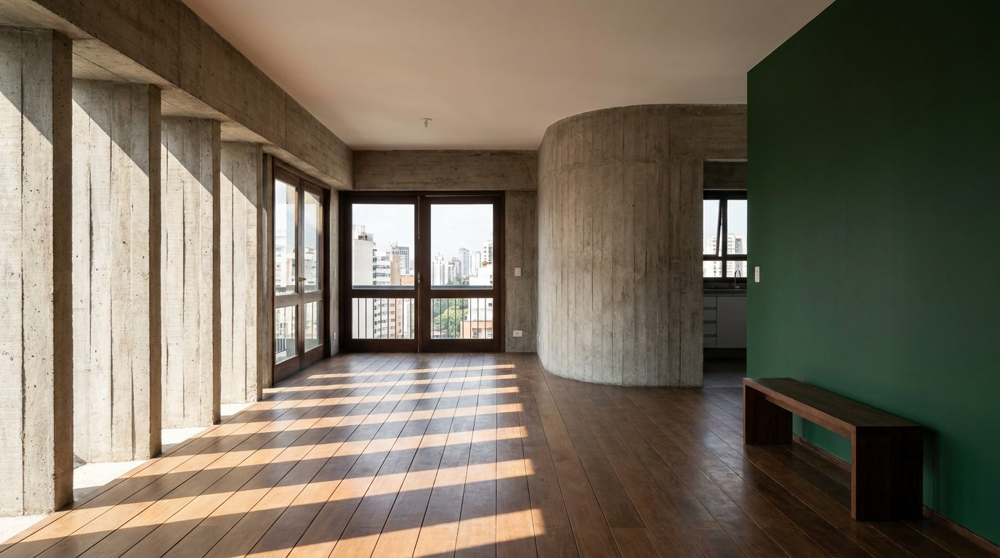

Atlante · INT-BR-01 · Brasile · Sudamerica
Appartamento nei Jardins con brise in cemento e legno di ipê
Esempi · esterno e interno


Perché funziona
In Brasile il cliente compra la città nuova: cemento, progetto e vista, non la casa coloniale. San Paolo vende un'idea di modernità costruita, e i Jardins sono il suo indirizzo: giardino inglese del 1913, isolati bassi e alberati, il retail più caro del paese a due passi. Per Poetica questa voce serve perché è l'unico set sudamericano dove il prodotto italiano può stare su cemento a vista senza sembrare un corpo estraneo. Il made in Italy entra nella misura: giunto del legno, profilo dell'infisso, finitura opaca del laccato. Non deve diventare una villa tropicale con foglie di banano e ceramiche dipinte: qui il lusso è l'impronta del cassero, non la decorazione.
Architettura · elementi riproducibili
- sette brise obliqui in cemento armato a vista, larghezza 1000 mm, spessore 120 mm, passo 1500 mm sul lato ovest
- solette in cemento a vista spessore 250 mm, impronta dei tavolati 150 mm lasciata a vista
- infissi in ipê a due ante 2400x2600 mm, profilo 60 mm, vetro 8+8 mm
- pavimento in doghe di ipê 20x120 mm a correre, posa a chiodo nascosto
- davanzale in travertino spazzolato 30 mm, sporgenza 40 mm dal filo muro
- parete curva in cemento a vista di raggio 1900 mm tra soggiorno e cucina, come nel tipo paulista
- arretramento di 15 m dal filo stradale con portico ombreggiato e giardino semi-pubblico
Fatto verificato: Jardim América nasce nel 1913 come lottizzazione della Companhia City su circa 1.091.118 mq; il primo piano è del 1915, firmato dagli urbanisti britannici Barry Parker e Raymond Unwin, con Parker a San Paolo tra il 1917 e il 1919. È considerato il primo quartiere-giardino di San Paolo.
Fatto verificato: l'Edifício Guaimbê di Paulo Mendes da Rocha con João Eduardo de Gennaro, in Rua Haddock Lobo 1447 a Cerqueira César, è interamente in cemento a vista: tredici piani tipo da 200 mq, sette brise obliqui larghi 1 m sul lato ovest e pensiline curve in cemento con fioriere triangolari.
Fatto verificato: l'Edifício Louveira (Vilanova Artigas e Carlos Cascaldi, progetto 1946, costruito nel 1950) in Rua Piauí 1081 a Higienópolis è formato da due lamine parallele con cortile giardino interno ed è tutelato dal Condephaat dal 1992.
Valutazione: il riferimento edilizio è a Cerqueira César, ai margini dei Jardins, perché il tipo è lo stesso; il set resta nel quartiere-giardino, dove il lotto basso e alberato tiene la vista fuori dalla finestra e lascia il cemento come unico protagonista.
Luce
Prompt di generazione (EN)
Empty apartment living room in a 1960s São Paulo building, 3.0 m ceiling, board-marked exposed concrete on walls and slab edges, seven oblique concrete fins 120 mm thick on the west side cutting the sun into hard stripes, a curved concrete wall of 1.9 m radius between kitchen and living room, floor in 20 x 120 mm ipê boards laid straight, tall two-leaf ipê window frames 2400 x 2600 mm, one wall lacquered deep forest green at 20 percent sheen, a single generic low bench in dark timber. One key light: north-west sun at 38 degrees, 5300 K, hard-edged shadows. 28 mm lens, camera at 1.25 m, two-point perspective, verticals parallel, neutral grade with lifted concrete greys and one saturated green block, no people, no text, no logos.